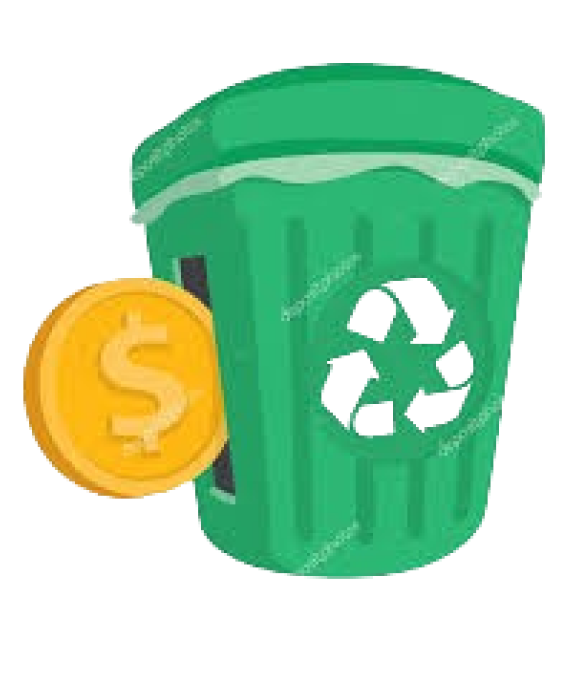

SELAMAT DATANG DI SAMPUN!

Tukar Sampah
Program tukar sampah menjadi poin adalah inisiatif yang bertujuan untuk mendorong masyarakat untuk aktif dalam menjaga lingkungan dengan memperbaiki perilaku mereka terhadap sampah
Tukar Poin
Melalui proses tukar poin menjadi barang,program ini memberikan insentif kepada masyarakat untuk berpartisipasi dalam kegiatan yang berkelanjutan dan menjaga lingkungan, sambil memberikan manfaat langsung bagi mereka
Tentang kami
SERVIS
Tentang Kami
sampun@gmail.com
IKUTI KAMI DI
Instagram : @SAMPUN
Facebook : @SAMPUN